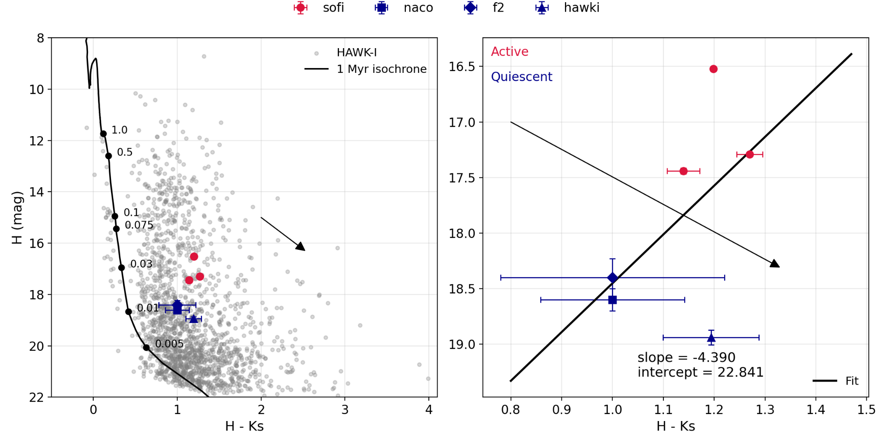
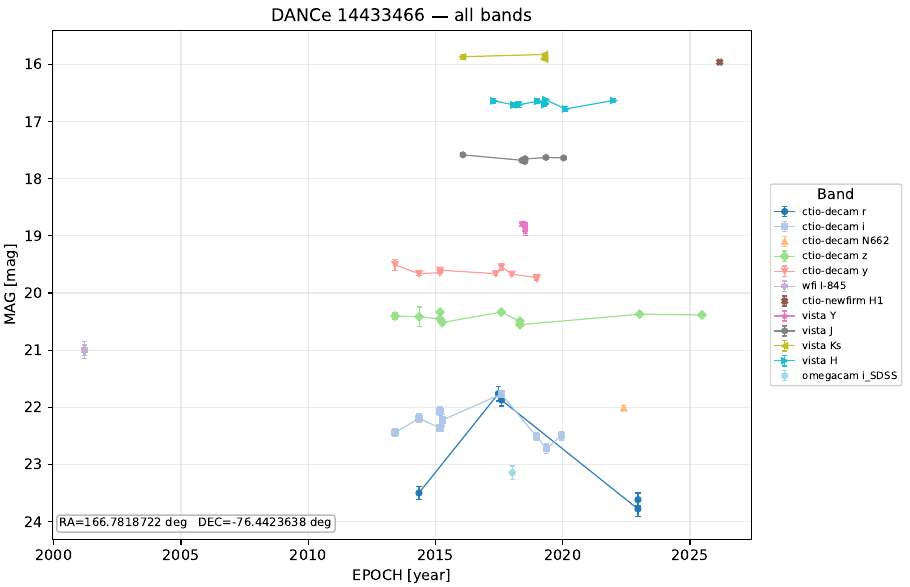

RCW 36 notebook · Unpublished work
An accretion-burst candidate in RCW 36
A source that became much fainter—and slightly bluer—across two decades of near-infrared observations.
ExploreFROM MY RESEARCH NOTEBOOK
Findings, plots and stories from the work in progress. A place for interesting things beyond the papers.

RCW 36 notebook · Unpublished work
A source that became much fainter—and slightly bluer—across two decades of near-infrared observations.
Explore
DANCe notebook · Archival variability
The known accretion burst of Cha 1107–7626, recovered in our multi-epoch DANCe photometry.
Explore